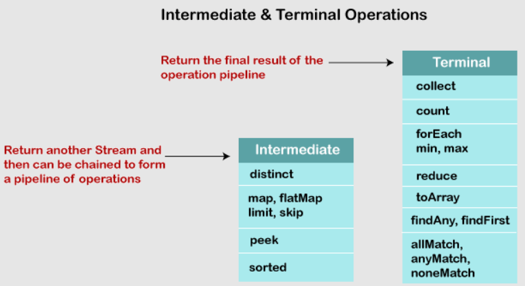

Streams
Los Streams fueron introducidos en Java 8 para abrir la puerta a la programación funcional al igual que con las expresiones lambda.
La API Stream permite manipular las colecciones como nunca antes. Nos permite realizar operaciones sobre la colección, como por ejemplo, buscar, filtrar, reordenar, etc.
Con Streams podemos utilizar cualquier clase que implemente la interfaz Collection como si fuese un Stream con la ventaja que nos ofrecen las expresiones lambda.
Con streams hay que tener el cuenta que la fuente o colección que utilicemos no se puede modificar y no debe afectar al estado de la misma. Cada operación dentro del stream debe verse como una operación independiente que opera sobre el argumento (colección).
A través del API Stream podemos trabajar sobre colecciones como si estuviéramos realizando sentencias SQL pero de una manera limpia y clara, evitando bucles y algoritmos que ralentizan los programas e incluso hacen que el código se torne inmanejable.
Cada operación del stream debe verse como un paso independiente, es decir, no se puede usar variables intermedias.
Partes de un Stream

De forma genérica existen 3 partes que componen un Stream:
- Un Stream funciona a partir de una lista o colección, que también se la conoce como la fuente de donde obtienen información.
- Operaciones intermedias como por ejemplo el método filter, que permite hacer una selección a partir de un predicado.
- Operaciones terminales, como por ejemplo los métodos max, min, forEach, findFirst etc.

La fuente proporciona los elementos a la tubería.
Las operaciones intermedias obtienen elementos uno por uno y los procesan. Todas las operaciones intermedias son perezosas (lazy) y, como resultado, ninguna operación tendrá ningún efecto hasta que la tubería comience a funcionar.
Las operaciones terminales significan el final del ciclo de vida del steam. Lo más importante para nuestro escenario es que inician el trabajo en la tubería.
Funciones de Stream

Collect()
Es una operación terminal, se utiliza para indicar el tipo de colección en la que se devolverá el resultado final de todas las operaciones realizadas en el stream.
List<String> lista = Arrays.asList("Texto1", "Texto2");
Set<String> set = lista.stream().collect(Collectors.toSet());
Peek()
El método peek recibe como parámetro una expresión lambda de tipo Consumer para poder utilizar cada elemento del stream. Normalmente se utilizar para mostrar por consola el contenido del stream.
Este método existe principalmente para la depuración del programa, donde se desea ver los elementos a medida que pasan por un punto determinado en el pipeline.
peek() también se utiliza cuando queremos alterar el estado interno de un elemento (aunque esto no es muy común).
Stream.of("one", "two", "three", "four")
.filter(e -> e.length() > 3)
.peek(e -> System.out.println("Filtered value: " + e))
.map(String::toUpperCase)
.peek(e -> System.out.println("Mapped value: " + e))
.collect(Collectors.toList());
Map()
El método map recibe como parámetro una expresión lambda de tipo Function, por lo que debemos especificar una función que recibe como parámetro de entrada cada elemento del stream, y devuelve un objeto que puede ser un tipo de dato distinto o el mismo.
La función se aplica a cada uno de los elementos del stream para realizar alguna transformación sobre cada elemento y devuelve otro Stream sobre el cual puedes seguir trabajando.
Se utiliza para modificar el contenido del stream.
map() devuelve un stream nuevo que consta de los resultados de aplicar la función dada a los elementos del stream.
List<Integer> list = Arrays.asList(3, 6, 9, 12, 15);
//Mostramos el nuevo stream devuelto por map
list.stream().map(number -> number * 3).forEach(System.out::println);
//[9 18 27 36 45]
FlatMap
Cuando nos encontramos con estructuras más complejas, como por ejemplo una lista con otra lista, trabajar con map() no es suficiente, por ello, utilizamos flatMap() que lo que hace es "aplanar" listas anidadas y quedarnos con un stream plano.
Es una función que recibe una entrada y devuelve varias salidas para esa entrada. Esa es la diferencia con respecto a map() que recibe solo un parámetro de entrada y devuelve una salida.
flatMap() es una operación intermedia y devuelve un nuevo Stream.
Devuelve un Stream que consiste en los resultados de reemplazar cada elemento del stream dado con el contenido de un stream mapeado producido al aplicar la función de mapeo provista a cada elemento.
La función de mapeo utilizada para la transformación en flatMap() es una función sin estado y solo devuelve una secuencia de nuevos valores.
En el siguiente ejemplo el programa usa la operación flatMap() para convertir una lista de una lista List<List<Integer>> a una lista List<Integer>.
List<Integer> list1 = Arrays.asList(1,2,3);
List<Integer> list2 = Arrays.asList(4,5,6);
List<Integer> list3 = Arrays.asList(7,8,9);
List<List<Integer>> listOfLists = Arrays.asList(list1, list2, list3);
List<Integer> listOfAllIntegers = listOfLists.stream()
.flatMap(x -> x.stream())
.collect(Collectors.toList());
System.out.println(listOfAllIntegers);
//[1, 2, 3, 4, 5, 6, 7, 8, 9]
ForEach()
Recorremos cada elemento del stream para realizar alguna acción con él. Como bien sabemos recibe como parámetro una exprsión lambda de tipo Consumer.
Filter()
Como su nombre indica lo que hacemos es filtrar de todos los elementos del stream solo aquellos que cumplan una determinada condición.
Recibe como parámetro una expresión lambda Predicate la cual debe devolver true solo en aquellos elementos que se quedarán en el stream y false para aquellos elementos que se deben eliminar.
FindFirst()
Se utiliza para devolver el primer elemento encontrado del stream. Se suele utilizar en combinación con otras funciones cuando hay que seleccionar un único valor del stream que cumpla determinadas condiciones.
findFirst devuelve un objeto de tipo Optional para poder indicar un valor por defecto en caso de que no se pueda devovler ningún elemento del stream.
ToArray()
Con este método se puede convertir cualquier tipo de Collection en un array de forma sencilla.
Sorted()
Se utiliza para ordenar los elementos del stream. Recibe como parámetro una expresión lambda de tipo Comparator para que podamos indicar la lógica de la ordenación.
Min()
Con min se obtiene el elemento del stream con el valor mínimo calculado a partir de una expresión lambda de tipo Comparator que indicamos como parámetro.
min devuelve un objeto de tipo Optional para poder indicar un valor por defecto en caso de que no se pueda devolver ningún elemento del stream.
Max()
Con max se obtiene el elemento del stream con el valor máximo calculado a partir de una expresión lambda de tipo Comparator que indicamos como parámetro de la expresión.
max devuelve un objeto de tipo Optional para poder indicar un valor por defecto en caso de que no se pueda devolver ningún elemento del stream.
Distinct()
Con distinct se seleccionan los elementos distintos dentro del stream eliminando los duplicados.
Los elementos se comparan utilizando el método equals().